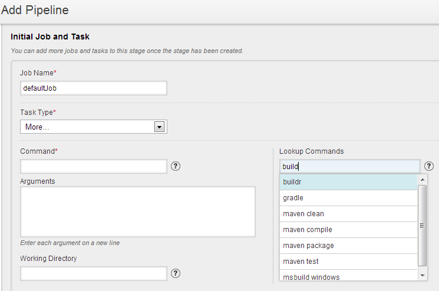
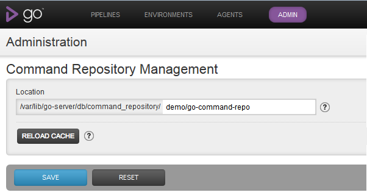
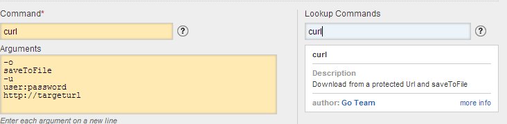

Command Repository
Introduction
This feature is an enhancement to Custom Commands in Go. Rather than start from scratch with command name and arguments, you now have the option to look up a command from a repository of useful commands maintained by the Go team. The lookup provides a starting point, you may need to edit the arguments, specify a working directory etc. Once saved, the behaviour is the same as a manually entered custom command.
Using the command repository
This feature can be used anywhere you need to specify a custom command.
- Add a new pipeline

- Add a new stage to a pipeline
- Add a new job to a stage
- Add a new task to a job
- Edit a task
Custom commands and agents
Go does not check if the command that you have specified is available on the agents.
Install the relevant command on all the agents where you want it to run. If it is not available on the default path, add it to the path in /etc/default/go-agent or equivalent. This requires an agent restart.
Alternatively, create a symbolic link to the path to the executable from /bin or equivalent folder. This doesn't require an agent restart
Args style commands
The older args style commands are not supported by this feature. Please convert them to the new syntax using the config xml editor ( Admin > Config XML ). For example:
<exec command="touch" args="a b c"/>
becomes
<exec command="touch"> <arg>a</arg> <arg>b</arg> <arg>c</arg> </exec>
Bundled Repository
Pulling Updates
Go team will continue to add (and sometimes update) commands to the repository on GitHub. If you want to make these commands available to your Go server without waiting for a new release or without upgrading your Go server, you could git pull them into <go-server-install-root>/db/command_repository/default as desired.
Linux/Unix
Here is a simple crontab entry that you could add to Go service account's crontab to pull commands once a day.@daily cd <go-server-install-root>/db/command_repository/default;git pull >>/var/go/cronrun 2>&1
Caution: Don't pull as root/administrator. Use the Go service account.
Windows
On Windows, you could set up a scheduled task to run this script on a schedule.echo %date% %time% >>c:\pull-log.txt 2>&1 cd "C:\Program Files (x86)\Go Server\db\command_repository\default" git pull >>c:\pull-log.txt 2>&1
Go caches these commands with a refresh interval of 30 minutes so you may not see the results of a pull immediately in the lookup unless you hit the reload cache button under the command repository section on the server configuration admin page or by using the reload API.
Private Repository
If you want to add your own commands for look up, you should set up your own Git/Mercurial/Subversion/Perforce/TFS repository that your command authors can commit/check-in into.
Make a clone/working copy available under <go-server-install-root>/db/command_repository/<your-repo-name> . Symbolic links are not supported.
Switch Go Server to this location
To do this, go to Command Repository Management section of Server Configuration in Admin tab and change the default value

From the Go server's point of view, the command repository is just a directory under which it recursively looks for valid command.xml files. Note that directory names starting with a dot will be ignored.
Go will not lookup from the bundled repository if you switch to your own repository. You could choose to manually seed your private command repository with Go's bundled set of commands if you want to have them in addition to your own commands.
Recommended process
- Command author pushes/checks-in command to corporate version control system
- Cron job on Go-server pulls/updates local repository/working copy in due course
- Go Server caches the commands to improve response time. In case of changes in the command repository, new command gets into the cache in one of the following ways:
- The default cache invalidation interval of 30 mins kicks in and the cache gets refreshed
- Go server admin clicks on the RELOAD CACHE button
- Go server admin uses the reload API through a cron job or otherwise to force a cache reload.
The commands in the command repository are not part of your Go Server config. They become part of your Go server config only after you (optionally edit and) save them.
Command syntax and lookup logic

The above screenshot resulted from the command below:
<!-- name: curl description: Download from a protected Url and saveToFile author: Go Team authorinfo: http://support.thoughtworks.com/categories/20002778-go-community-support keywords: curl, http, download, wget moreinfo: http://curl.haxx.se/docs/manual.html --> <exec command="curl"> <arg>-o</arg> <arg>saveToFile</arg> <arg>-u</arg> <arg>user:password</arg> <arg>http://targeturl</arg> </exec>
This is an example of valid command syntax. The command attribute is mandatory. No other attributes are valid. Zero or more arg child elements can be specified. No other child elements are allowed. One command file may only contain one command.
When you lookup a command, the following logic is used to sort the resulting suggestions:
- Exact matches of name in command documentation (or filename if name missing)
- Partial starts-with matches of name in command documentation (or filename if name missing)
- Exact matches of keywords in command documentation
Contributing Commands
We welcome commands contributed by users. Simply,
- fork this GitHub repo
- Clone it locally
- Commit and push your change
- Send us a pull request